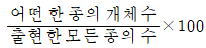
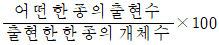
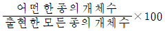
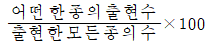
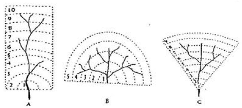
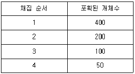
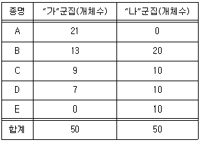

자연생태복원산업기사 (2012-08-26 기출문제)
1과목: 환경생태학개론
1. 보전지역 설정을 위한 유네스코 MAB모델과 거리가 먼 것은?
- 보전가치에 따라 핵심지역, 완충지역, 전이지역으로 구분한다.
- 핵심(core)지역은 희귀종, 고유종, 멸종위기종이 많거나 생물 다양성이 높은 곳이다.
- 완충(buffer)지역에는 생태관광, 주거지 등이 가능하다.
- 전이(transition)지역에는 일정수준의 개발이 허용된 지역이다.
(정답률: 알수없음)

2. 다음 중 생태학에서 전이대(transition zone)에 대해 가장 바르게 설명한 것은?
- 우릭와 건기가 뚜렷한 지역을 말한다.
- 봄, 여름, 가을, 겨울이 뚜렷한 지역이다.
- 두 개의 군집이 서로 겹쳐 있는 지역을 말한다.
- 한 개의 군집이 우점하고 있는 지역을 말한다.
(정답률: 알수없음)
3. 토양의 침식(soil erosion)에 관한 설명 중 틀린 것은?
- 지나친 경작이나 방목 등이 원인이다.
- 작물재배에 적당한 흙이 가장 먼저 씻겨나간다.
- 토양침식에 의해 경작이 불가능한 지역은 감소한다.
- 강우량이 많은 지역에서의 토양침식은 사막화를 초래할 수 있다.
(정답률: 알수없음)
4. 핵심종(중추종, keystone species)를 가장 바르게 설명한 것은?
- 넓은 서식처 요구 종
- 개체수가 적은 희소 종
- 종다양성을 결정하는 종
- 특정 군집에 가장 많은 종
(정답률: 알수없음)
5. 생태계의 생물적 구성요소에 해당하지 않는 것은?
- 생산자(producer)
- 거대소비자(macroconsumer)
- 대기(atmosphere)
- 분해자(decomposer)
(정답률: 알수없음)
6. 다음 중 수도(abundance)를 구하는 공식은?
- 전 방형구 내에 있는 어떤 종의 평균 개체수 / 어떤 종이 출현하는 방형구의 총 수
- (전 방형구 내에 있는 어떤 종의 총 개체수 / 어떤 종이 출현하는 방형구의 총 수) × 100
- 전 방형구 내에 있는 어떤 종의 총 개체수 / 어떤 종이 출현하는 방형구의 총 수
- (전 방형구 내에 있는 어떤 종의 평균 개체수 / 어떤 종이 출현하는 방형구의 총 수) × 100
(정답률: 알수없음)
7. 부영양호와 빈영양호의 특성 비교 중 옳지 않은 것은?
- 물의 투명도 : 빈영양호(맑음), 부영양호(혼탁)
- 물의 색 : 빈영양호(무색-청색), 부영양호(녹색-황색)
- 수심 : 빈영양호(얕음), 부영양호(깊음)
- 주요 식물성 플랑크톤 : 빈영양호(규조류, 와편모조류), 부영양호(남조류, 녹조류)
(정답률: 알수없음)
8. 농업생태계가 자연생태계와 다른 특징에 해당되지 않는 것은?
- 반인공적 생태계
- 불안정한 생태계
- 단순한 생태계
- 물질순환시스템 생태계
(정답률: 알수없음)
9. 가래발 두꺼비, 얼룩다람쥐가 서식하며 하면(aestivation)을 하고 활동을 하는 곳은?
- 열대사바나
- 초원
- 사막
- 소택지
(정답률: 알수없음)
10. 종의 상대빈도(RF, relative frequency)을 구하는 공식은?




(정답률: 알수없음)
11. 지질학적 연대 동안 5~6차례 발생한 대량멸종(mess extinction)의 원인으로 볼 수 있는 것은?
- 외래종 유입
- 과도한 사냥
- 자연 도태
- 기후 변화
(정답률: 알수없음)
12. 대기오염경보단계는 주의보, 경보, 중대경보로 구분된다. 그 중 '경보'의 발령은 얼마 이상일 때를 기준으로 하는가? (단, 기상조건 등을 검토하여 해당 지역의 대기자동 측정소의 오존농도를 기준으로 한다.)
- 0.01ppm
- 0.1ppm
- 0.3ppm
- 1.0ppm
(정답률: 알수없음)
13. 피라미드의 영양단계는 생산자 개체군 위에 1차, 2차, 3차와 최고 단계의 소비자가 있다. 일반적으로 사용되는 생태적 피라미드의 형태로서 알맞지 않은 것은?
- 개체수 피라미드
- 생물량 피라미드
- 분해자 피라미드
- 에너지 피라미드
(정답률: 알수없음)
14. 부영양화를 측정하는 방법으로 틀린 것은?
- 볼렌바이더 방법
- 클로로필-a 방법
- 지수분석법
- 영향상태지표(TSI)
(정답률: 알수없음)
15. 생태적 지위(Niche)에 대한 설명으로 틀린 것은?
- 생물공동체나 군집에 있어 생물종이 해야 하는 기능상의 역할을 말한다.
- 논생태계에서 개구리와 백로는 동일한 생태적 지위에 있다고 볼 수 있다.
- 서식지에서 종이 점유하고 있는 위치를 말한다.
- 야생조류는 종별 생태적 지위가 다르며, 이는 종간경쟁을 막기 위한 방법이다.
(정답률: 알수없음)
16. 개체군 생태학에서 사용되는 용어에 대한 설명이 틀린 것은?
- 밀도(density) : 단위공간당 개체군의 크기
- 출생률(nantality 또는 birth rate) : 단위시간당 생식활동에 의해서 새로운 개체들이 더해지는 숫자
- 사망률(mortality 또는 death rate) : 단위시간당 개체들이 개추군으로 이주해 들어오거나 개체군으로부터 이주해 나가는 숫자
- 산포(disperasal) : 개체들이 공간에 분포되는 방법으로서 임의분포, 균일분포, 군생분포 등으로 구분
(정답률: 알수없음)
17. 대류권 저층에서 발생하는 기온 감소가 맞는 것은?
- 해발고도가 매 km 높아짐에 따라 3~4℃씩 감소
- 해발고도가 매 km 높아짐에 따라 5~6℃씩 감소
- 해발고도가 매 km 높아짐에 따라 8~9℃씩 감소
- 해발고도가 매 km 높아짐에 따라 10~12℃씩 감소
(정답률: 알수없음)
18. 호소의 식물성 부유생물에 대한 설명으로 맞지 않는 것은?
- 고등식물과 함께 호소의 중요한 생산자이다.
- 규조, 남조 및 녹조류가 있다.
- 이동은 주로 대류나 파도에 의한다.
- 밤에는 수면으로, 낮에는 밑으로 매일 수직 이동한다.
(정답률: 알수없음)
19. 다음 중 아황산가스에 민감한 생물 집단은?
- 지의류 및 이끼류
- 포플러와 플라타너스 수목류
- 곤충과 파충류
- 포유류와 새
(정답률: 알수없음)
20. 생물이 살아가는 장소를 무엇이라 하는가?
- 환경요인
- 서식지
- 생물요인
- 내성범위
(정답률: 알수없음)
2과목: 환경학개론
21. 일반적으로 공원녹지면적에 포함되지 않는 것은?
- 어린이공원면적
- 완충녹지면적
- 해수면적
- 도시자연공원면적
(정답률: 알수없음)
22. 일반적인 식물원 및 수목원의 기능이 아닌 것은?
- 관광과 식물 판매
- 식물의 현지 외 보전지역
- 휴식 및 레크레이션 공간의 제공
- 식물의 학술적인 연구와 새로운 식물 육종
(정답률: 알수없음)
23. 미국환경심의위원회에서 정의하고 있는 미티게이션(Mitigation)이라는 환경보전 조치의 가테고리에 들지 않는 것은?
- 회피
- 저감
- 대체
- 복구
(정답률: 알수없음)
24. 우리나라에서 택지개발을 위한 공간계획의 순서가 바르게 나열된 것은? (단, 상위계획부터 순서대로 나열한다.)
- 광역도시계획 → 도시·군계획 → 도시·군기획계획 → 지구단위계획
- 광역도시계획 → 도시·군기획계획 → 도시·군계획 → 지구단위계획
- 광역도시계획 → 지구단위계획 → 도시·군기획계획 → 도시·군계획
- 광역도시계획 → 지구단위계획 → 도시·군계획 → 도시·군기획계획
(정답률: 알수없음)
25. 다음 토지 관련 주제도별 구축목적과 원시자료 및 평가단위에 대한 설명 중 옳은 것은?
- 토지피복지도 : 위성영상자료를 토대로 환경계획, 관리
- 토지특성도 : 항공사징늘 기초로 국토이용계획 및 관리
- 토지이용현황도 : 수치지형도를 토대로 지목과 토지용도 관리
- 생태자연도 : 필지단위로 평가하며 지역의 자연성을 관리
(정답률: 알수없음)
26. 다음 중 효율적인 생태네트워크를 위한 시행방안으로 적절치 않은 것은?
- 야생동물 이동통로 설치
- 비오톱 조사 및 지도화
- 옥상 및 벽면 녹화
- 임도의 설치 및 확대
(정답률: 알수없음)
27. 일반적인 빗물이 pH값이 얼마 미만일 때 산성비의 기준이 되는가?
- 2.3
- 3.0
- 5.6
- 6.4
(정답률: 알수없음)
28. 국토의 계획 및 이용에 관한 법률에서 국토는 토지의 이용실태 및 특성, 장래의 토지이용 방향 등을 고려하여 용도지역을 구분하는데 이에 해당하지 않는 것은?
- 자연환경보전지역
- 준도시지역
- 생산관리지역
- 농림지역
(정답률: 알수없음)
29. 곤충이 서식하기 위한 기본적인 입지조건을 부적합한 것은?
- 산림이나 숲 가장자리 추이대 지역의 햇볕이 잘 드는 곳이 최적의 입지이다.
- 관목과 교목 식재가 가능해야 하며, 적당한 마운딩을 할 수 있어야 한다.
- 가까운 곳에 다른 습지나 수변공간이 있으면 좋지 않다.
- 습지는 깨끗한 수원이 확보되어야 하며, 대기오염이 심하지 않아야 한다.
(정답률: 알수없음)
30. 도시지역에서 비오톱의 기능에 해당하지 않는 것은?
- 도시민의 휴식공간
- 환경교육을 위한 실험지역
- 난개발방지를 위한 개발 유보지
- 도시생물종의 은신처 및 이동통로
(정답률: 알수없음)
31. 다음 중 생물학적 침입에 대한 대책으로 적절하지 않은 것은?
- 귀화식물을 효과적으로 제거시킨다.
- 이입의 기회를 최소화한다.
- 이입종의 정착을 위한 환경을 만들지 않는다.
- 자생식물의 내병성을 증진시킨다.
(정답률: 알수없음)
32. 자연형 하천계획에 있어서 저수로 호안 및 제방하안 식생공법의 설명 중 잘못된 것은?
- 유속이 빠른 저수로 호안에는 버드나무 말뚝을 이용한다.
- 버드나무 가지와 말뚝을 이용한 펜스의 사용시 말뚝의 길이는 2~3미터 두께는 8센티미터가 적절한다.
- 제방 하안에는 갯버들, 오리나무 등을 식재하는 것이 권장된다.
- 저수로의 버드나무는 20년 주기로 교체할 필요가 있다.
(정답률: 알수없음)
33. 환경생태응용이론의 설명이 아닌 것은?
- 상리공생은 공생관계 중의 하나이다.
- 먹이그물(food web)은 먹이연쇄(food chain)와는 전혀 다른 개념이다.
- 생물공동체(biocoenosis)는 동일한 장소에서 생활하는 동물과 식물, 미생물의 전제집단을 뜻한다.
- 상릭오생은 동물과 동물, 동물과 식물사이에서는 많으나 식물과 식물 사이에서는 볼 수 없다.
(정답률: 알수없음)
34. 국토계획체계 개편과 함께 도입된 제도로 관리지역의 세분화와 합리적 관리를 위해 토지가 가지고 있는 인문, 자연, 공간입지적 환경을 객관적이고 계량적으로 평가하는 것을 무엇이라 하는가?
- 토지이용평가
- 토지적성평가
- 비오톱평가
- 에코톱평가
(정답률: 알수없음)
35. 생물종 다양성에 관련된 내용 중 틀린 것은?
- 천이과정의 마지막 상태에서 종다양성 지수는 1에 가깝다.
- 생물다양성에 관한 협약은 1982년 유엔환경개발회의에서 채택되었다.
- 자연생태의 생물군집은 생태학적 천이과정을 통해 성장단계를 거쳐 성숙 안정화 된다.
- 샤논지수(index of Shannon)을 기반으로 하는 균제도 지수는 종의 다양성을 표현한다.
(정답률: 알수없음)
36. 다음 중 생태네트워크의 공간 구성 원리에 포함되지 않는 것은?
- 핵심지역
- 완충지역
- 코리더
- 모자이크
(정답률: 알수없음)
37. 공원과 녹지의 기능으로 바르지 않은 것은?
- 도시공간을 구획한다.
- 도시환경의 질적 기반을 제공한다.
- 도시경관의 질을 향상시킨다.
- 도시개발의 질서를 부여한다.
(정답률: 알수없음)
38. 수질오염의 출처(원인)에 대한 설명으로 틀린 것은?
- 도시폐수는 산업폐수가 대부분이다.
- 산업폐수의 약 7~8%만이 도시하수체계로 배출된다.
- 농업수오염의 큰 원인은 동물사육장의 폐기물이다.
- 일부 수질오염은 고체폐기물과 대기오염물질로부터 올 수 있다.
(정답률: 알수없음)
39. 다음 중 인구증가와 관련한 환경문제와 거리가 먼 것은?
- 경제성장
- 환경오염 및 자원고갈
- 기하급수적 인구증가에 의한 식량난
- 인구 증가에 따른 농지 확대 개발 및 도로 주택건설에 따른 자연파괴
(정답률: 알수없음)
40. 다음 중 토지환경성 평가의 기준으로 사용될 수 있는 도면으로 성격이 다른 것은?
- 임상도
- 토지 피복 분류도
- 수변구역 분포도
- 경사도
(정답률: 알수없음)
3과목: 생태복원공학
41. 다음의 그림에 대한 설명으로 틀린 것은? (단, 유연면적은 동일하며, 강우량이 같고, 강우가 유역전역에 최소한 10시간 계속된다고 가정함.)

- B유역의 형상이 첨두유량에 도달하는 시간이 가장 빠르다.
- B유역의 형상이 강우가 끝나면 가장 빨리 감수(減水)하게 된다.
- 가장 오랫 동안 유출이 되는 유역의 형상은 A이다.
- 유출량의 변화가 가장 적은 것은 C유역의 형태이다.
(정답률: 80%)
42. 토양수분은 수분포텐셜 및 수분이 존재하는 상태에 따라 구분하게 되는데, 다음 중 모세관수에 대한 설명으로 옳은 것은?
- pF 2.8~3.0 정도에 상당하고 식물에 주로 사용되는 수분을 말한다.
- 토양 대공극에 있던 물이 토양에 보유되는 힘이 약하여 쉽게 흘러내리게 되는 수분이다.
- 토양입자 내에 존재하여 100~110℃로 가열해도 증발하지 않는 수분을 말한다.
- 건조한 토양이 공기 중의 수분을 흡수하여 토양입자 주변에 물 분자층으로 흡착되는 수분을 말한다.
(정답률: 알수없음)
43. 씨뿌리기(비탈 씨뿌리기, 직파공) 방법 중 흩어뿌리기(흩어씨뿌리기)와 관련한 설명으로 틀린 것은?
- 경사가 완만하고 습윤한 토사의 퇴적지 비탈 또는 절·성토비탈 중 토양조건이 양호한 사면에 시공한다.
- 비탈다듬기 공사를 하고 부토사(浮土砂)는 전부 정리하여 반드시 견지반(堅地盤)을 노출시킨다.
- 비탈면에 직고 60cm 정도 나비 20~30cm의 수평 계단을 끊는다.
- 파종하는 모든 초·목종 간에는 혼파(混播)를 하는 것이 그렇지 않는 것보다 좋다.
(정답률: 알수없음)
44. 훼손지 비탈면 식생녹화 공법 중 매트를 이용한 것으로 기계화 시공이 곤란하고 침식발생이 높게 예상되는 비탈 주연부 및 폐탄광지·채석지의 비탈에 적용 가능한 공법은?
- 종자부착매트피복공법
- 식생대공법
- 녹화용 식생자루공법
- 개량 seed pray 공법
(정답률: 알수없음)
45. 정체수에 의한 습지로서 숲이나 관목덤불 등으로 덮인 습지이며, 야생동물의 서식처로 중요한 죽은 나무들로 덮이기도 하는 습지는 무엇인가?
- 소택지(Swamp)
- 수변습지(Riparian Wetlands)
- 늪(Marshes)
- 산성습지(Bogs)
(정답률: 알수없음)
46. 야생동물의 서식을 위한 일반적 필수요소라고 볼 수 없는 것은?
- 모래 및 자갈
- 은신처
- 먹이
- 물
(정답률: 90%)
47. 생태계에 있어서 토양은 양분을 순환시키는 기능을 하는데, 다음 중 이러한 역할을 하지 않는 것은?
- 토양미생물
- 토양 내 동물
- 물
- 식물의 뿌리
(정답률: 알수없음)
48. 돌쌓기공사 시공방법의 설명으로 옳은 것은?
- 기초를 얕게 파고, 밑바닥을 단단히 다져야 한다.
- 귀돌이나 갓돌은 우량한 것보다는 구득하기 쉬운 것을 사용한다.
- 돌쌓기벽의 세로줄눈이 일직선이 되는 통줄눈은 피해야 한다.
- 줄눈의 두께는 20~25mm정도로 하지만, 별도로 모르타르는 채우지 않아도 된다.
(정답률: 알수없음)
49. 경사지에서 일정량 이상의 비가 올 때, 표면유거수가 집수되어 하나의 작은 물길을 형성하면서 진행되는 침식형태를 무엇이라 하는가?
- 우적침식
- 면상침식
- 누구침식
- 구곡침식
(정답률: 알수없음)
50. 최근에 관련 분야와의 파트너쉽에 의한 생태복원의 경향이 활발해지고 있다. 다음 중 그 사례가 아닌 것은?
- 지방의제 21 사업
- 주민참여형 근린공원 조성사업
- 걷고 싶은 거리 조성사업
- 산불피해지역 생태복원사업
(정답률: 알수없음)
51. 생태계 복원의 유형 중 현재의 상태를 개선하기 위하여 원래와는 다른 생태로 바꾸어 주는 것을 무엇이라고 하는가?
- 복원
- 대체
- 개선
- 복구
(정답률: 알수없음)
52. 보통의 오염 물질로 인하여 용존산소가 소모되는 일반 생태계로 여과, 침전, 활성탄 투입, 살균 등 고도의 정수처리 후 생활용수로 이용하거나 일반적 정수처리 후 공업용수로 사용할 수 있는 하천의 등급별 수질 및 수생태계 상태의 BOD(생물화학적 산소요구량)기준은?
- 1mg/L이하
- 3mg/L이하
- 5mg/L이하
- 8mg/L이하
(정답률: 알수없음)
53. 담수역에 있어서 식생의 정착은 수위변동 이외에 지형, 기후, 지질, 토층 등의 자연조건에 따라서 현저히 다르게 나타난다. 다음 중 녹화용 식물의 관수저항에 관한 설명으로 틀린 것은?
- 대단히 강한 식물(생존기간 175일간 이상) : 설창포, 속새
- 강한 식물(생존기간 85일간 이상) : timothy, tall fescue
- 약한 식물(생존기간 30일간 이하) : 돈나무, weeping love grass
- 대단히 약한 식물(생존기간 20일간 이하) : 송악, 영산홍
(정답률: 알수없음)
54. 하천의 복원 및 보전에 대한 설명 중 옳지 않은 것은?
- 생식장소를 개개별로 분석하여 단위집단의 크기에 따라 하천의 횡단과 종단에 미치는 영향을 고려하여 복원한다.
- 하천의 자연복원작용을 존중하여 주역은 하천이고, 인간은 조역이라는 계획방법에 따라 자연으로 하여금 하천의 형태를 만들게 한다.
- 하천은 당초의 형태가 계속 변형하는 것으로 보고 지형의 변화에 따라 식생의 천이가 나타는 것을 허용한다.
- 하천의 고유성과 개성이 가능한 한 잘 보전되도록 복원해야 한다.
(정답률: 알수없음)
55. 다음 중 인공계와 반대되는 생태계의 특징이 아닌 것은?
- 구성원들에 대한 많은 요소, 구조, 기능이 알려지지 않았다.
- 일반적으로 생물종의 수가 많을수록 자기 수복기능이 작동하고 시스템은 안정되어 있다.
- 시스템의 모든 측면이 인위적 제어의 대상이 된다.
- 시스템의 극히 한정된 측면만이 인위적 제어의 대상이 된다.
(정답률: 알수없음)
56. Forman(1995년) 등이 분류한 이동통로의 5가지 우형에 속하지 않는 것은?
- 양서류 터널
- 경관커넥터
- 암거 및 생태관
- 야생동물울타리
(정답률: 알수없음)
57. 일반적으로 식물의 종류는 잔디(초화류), 소관목, 대관목, 천근성 교목, 심근성교목으로 분류할 수 있다. 이 중 소관목의 생존 최소 토심(cm)으로 가장 적합한 것은?
- 15cm
- 30cm
- 50cm
- 70cm
(정답률: 알수없음)
58. 천이단계와 목본식물 종의 생활사 및 생리적 특성에 대한 일반적인 경향에 대한 설명 중 틀린 것은?
- 성장속도 : 천이 초기종 – 빠름, 천이 후기종 – 늦음
- 종자크기 : 천이 초기종 – 작음, 천이 후기종 – 큼
- 종자 휴면성 : 천이 초기종 – 있음, 천이 후기종 – 없음
- 내음성 : 천이 초기종 – 있음, 천이 후기종 – 없음
(정답률: 알수없음)
59. 녹화공사용 자재 중 목재의 성질에 관한 설명으로 옳지 않은 것은?
- 가볍고, 가공 및 취급이 용이하다.
- 공작에 필요한 설비가 간단하고, 온도에 따른 변화가 크다.
- 충격이나 진동을 잘 흡수한다.
- 부패성이 크고, 내화성이 약하며, 함수량에 따른 수축 및 팽창이 크다.
(정답률: 알수없음)
60. 생태학에 있어 생물종다양성(species diversity)의 내용으로 틀린 것은?
- 생물종이 다양해져 생태계가 안정되면 엔트로피 상태는 높게 유지된다.
- 생물종 다양성은 총량적인 측면에서 생물종별 개체수의 분포특성을 나타낸다.
- 극상상태의 생무종 다양성의 지수는 1에 가깝게 나타난다.
- 생물종 다양성은 생물집단의 극상상태를 판정하는 중요한 지표이다.
(정답률: 알수없음)
4과목: 생태조사방법론
61. 다음 중 순생산량을 측정하는데 사용되지 않는 방법은?
- 수확법
- 이산화탄소법
- 산소측정법
- 오존법
(정답률: 알수없음)
62. 일반적인 서식지 분석에 대한 옳은 기술이 아닌 것은?
- 결과에 대한 현지 확인
- 현지에서 예비조사와 적절한 자료 수집
- 해당 장소와 지역에 관한 적절한 서지와 문헌 검토
- 다수의 종에 영향을 미치는 환경요인의 평가는 미소서식지로 평가
(정답률: 알수없음)
63. 다음은 어떤 동물을 제거법에 의하여 조사한 결과이다. 이 동물의 총 개체수는?

- 750
- 800
- 850
- 900
(정답률: 80%)
64. 천이단계에 따른 서식지 환경변화를 파악하기 위해 조사하여 비교해야 할 환경요인이 아닌 것은?
- 상대광도
- 연강수량
- 유기물함량
- 낙엽층 두께
(정답률: 알수없음)
65. A와 B 지역을 조사한 결과 두 지역에 공통적으로 나타난 종이 10종, A지역에 출현하나 B지역에는 출현하지 않은 종이 8종, B지역에 출현하나 A지역에는 출현하지 않은 종이 7종인 경우 Jaccard coefficient를 이용하여 구한 두 지역의 community 유사도는?
- 5/2
- 2/5
- 3/2
- 2/3
(정답률: 알수없음)
66. 다음 중 정량조사의 대표적인 방법으로 일정면적의 조사구를 설정하여 그 지역 내의 모든 동·식물의 전수를 확인하는 방법은?
- 방형구법
- 빈도법
- 선차단법
- 포획법
(정답률: 알수없음)
67. 토양의 잠재비옥도는 1차적으로 양이온치환능(토양 100g당 수소이온이 양이온으로 치환될 수 있는 자리의 수)에 의해 결정된다. 토양의 잠재비옥도가 낮을 것부터 큰 것으로 순서가 배열된 것은?
- 자갈 → 모래 → 미사 → 점토
- 모래 → 미사 → 점토 → 자갈
- 미사 → 점토 → 자갈 → 모래
- 점토 → 미사 → 모래 → 자갈
(정답률: 알수없음)
68. 미소서식지 토양환경 조사를 위하여 채토해야 할 주토양 단면은?
- O(L)층과 R층
- A층과 O(L)층
- R층가 B층
- O(L)층과 C층
(정답률: 알수없음)
69. 다음 자료에서 백분율유사도 방법에 의한 “가”와 “나”군집의 군집유사도 값은 얼마인가? (단, 소수점 이하는 반올림한다.)

- 43%
- 50%
- 58%
- 60%
(정답률: 알수없음)
70. Connel과 Slatyer에 의하면 초기 식생의 천이에는 반작용이 매우 중요한 것으로 제시되고 있다. 여기에는 세 가지 모델이 있는데 이와 관련이 없는 모델은?
- 내성모델(tolerance model)
- 촉진모델(facilitation model)
- 억제모델(inhibition model)
- 식물상 교체 모델(relay floristics model)
(정답률: 알수없음)
71. 군락 조사시 열대우림의 교목층을 조사하기에 적당한 최소면적(m2)은?
- 1000~20000m2
- 200~500m2
- 10~100m2
- 1~10m2
(정답률: 84%)
72. 생태조사의 분석에 이용되는 지수 중 군집 분석에 사용되지 않는 지수는?
- 우점도 지수
- 균등도 지수
- 공존 지수
- 풍부도 지수
(정답률: 70%)
73. 어떤 지역에서 곤충을 표지법으로 조사한 결과 그 지역의 총 개체수가 500마리로 계산되었다. 1차로 포획하여 표시한 후 방사한 개체가 100마리이고 2차로 포획환 개체가 300마리라면 300마리 중 표시된 개체는 몇 마리인가?
- 30마리
- 50마리
- 60마리
- 90마리
(정답률: 알수없음)
74. 식생을 묘사하고 분류하기 위하여 식물군집을 조사하는 방법은?
- 대상법
- 측구법
- 방형구법
- Braun-Blanquet방법
(정답률: 알수없음)
75. 다음 중 측정기구와 항목이 옳게 짝지은 것은?
- 열전대 – 기압
- 일사계 – 풍속
- 노점계 – 광도
- 건습구온도계 – 상대습도
(정답률: 알수없음)
76. 곤충류의 조사 시 곤충의 발육에 필요한 유효적산온도를 참고하여야 한다. 발육기간 중의 평균온도 20℃, 발육한계 저온도 10℃, 발육에 필요한 일수가 10일 일 때 유효적산온도 K는 얼마인가?
- 10
- 40
- 100
- 2000
(정답률: 알수없음)
77. 식물조사시 측구법(방형구법)에서 중요하게 고려할 요인과 거리가 먼 것은?
- 방형구 모양
- 방형구 크기
- 방형구 수
- 방형구의 방향
(정답률: 알수없음)
78. 생물이 숙주의 안 또는 숙주의 체표에서 에너지와 서식처를 얻어 살아가고 있는 경우로 이 생물은 생식률이 높고 숙주의 특이성을 가지는데 이러한 종간 상호작용은?
- 편리공생
- 원시협동
- 상리공생
- 기생
(정답률: 알수없음)
79. 초지에서 수확법(harvest method)에 의한 연간일차순생산량의 측정법을 바르게 설명한 것은?
- 명병과 암병을 이용하여 광합성량과 호흡량을 동시에 측정한다.
- 방사성동위원소(C14)를 이용하여 광합성으로 고정된 C14의 양을 측정한다.
- 일정량의 시료를 채취하여 여과한 후 엽록소를 추출하여 분광광도계로 엽록소의 양을 측정한다.
- 생육기간 중 일정한 시간 간격으로 건중량을 측정함으로써 초본식물의 지상부 생산성 측정에 적합하다.
(정답률: 알수없음)
80. 질산성 질소를 분석할 때 반드시 필요한 시약은?
- chromotropic acid solution
- alkaline phenolate
- ammonium paramolydate
- ascorbic acid
(정답률: 알수없음)